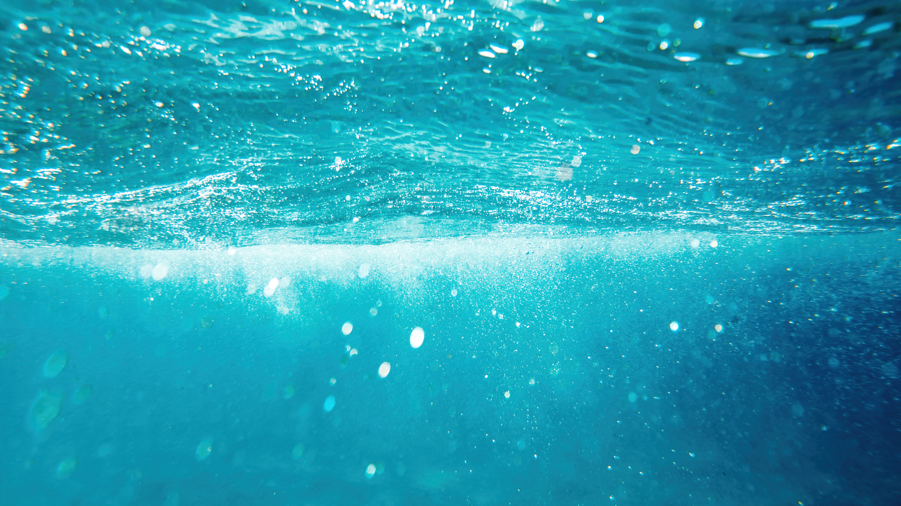

Imagen de frimufilms</a> en Freepik
En esta situación de aprendizaje, vamos a abordar la importancia del agua en nuestro planeta y en nuestro entorno mas cercano a través de una serie de retos que se se os plantean aquí y que tendréis que resolver. Cada uno de los retos corresponde a una situación de aprendizaje que esta compuesta por varias actividades evaluables.
Reto: Elaborar un portfolio sobre la importancia del agua en nuestro planeta y en nuestro entorno cercano. Para ello deberás llevar a cabo con éxito las siguientes actividades:
Actividad 1: - Elaboración de sendos mapas mentales sobre las propiedades del agua y la distribución del agua en nuestro planeta
Actividad 2: - Adjuntar al dossier un informe sobre el consumo de agua en España por sectores y preparar un test sobre lo recopilado.
Actividad 3: - Estudiar la evolución reciente del embalse de Iznajar y generar un pequeño informe gráfico.
Actividad 4: - Calcular nuestra huella hídrica y hacer una propuesta de reducción de nuestro consumo doméstico de agua.
Actividad 5: El Poder de disolución del Agua. Aprovecharemos este concepto para trabajar con el método científico.
Actividad 6: Prueba Escrita. Para comprobar que conceptos te llevas contigo.